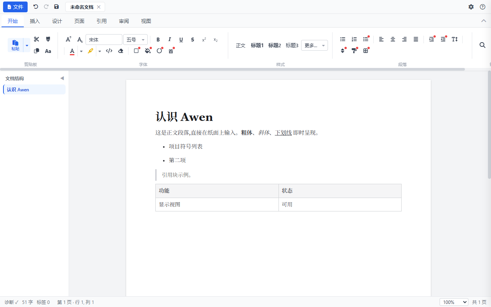
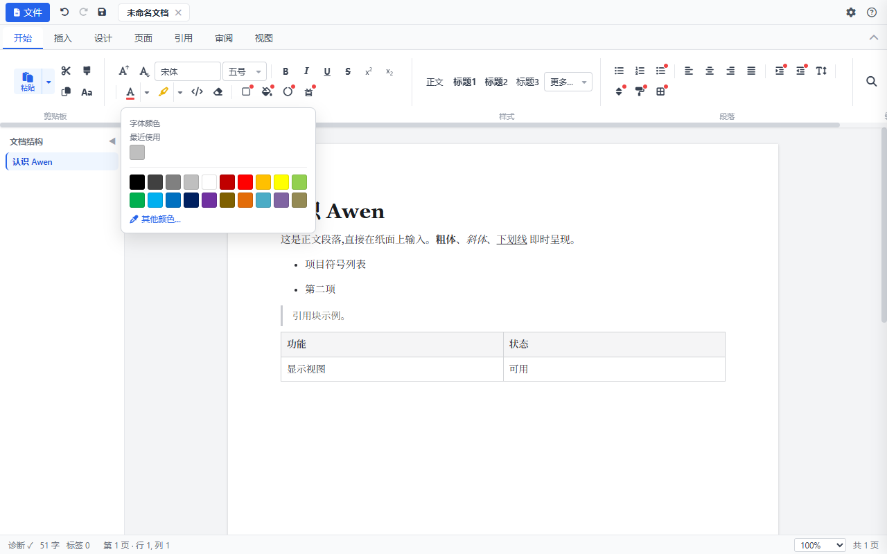
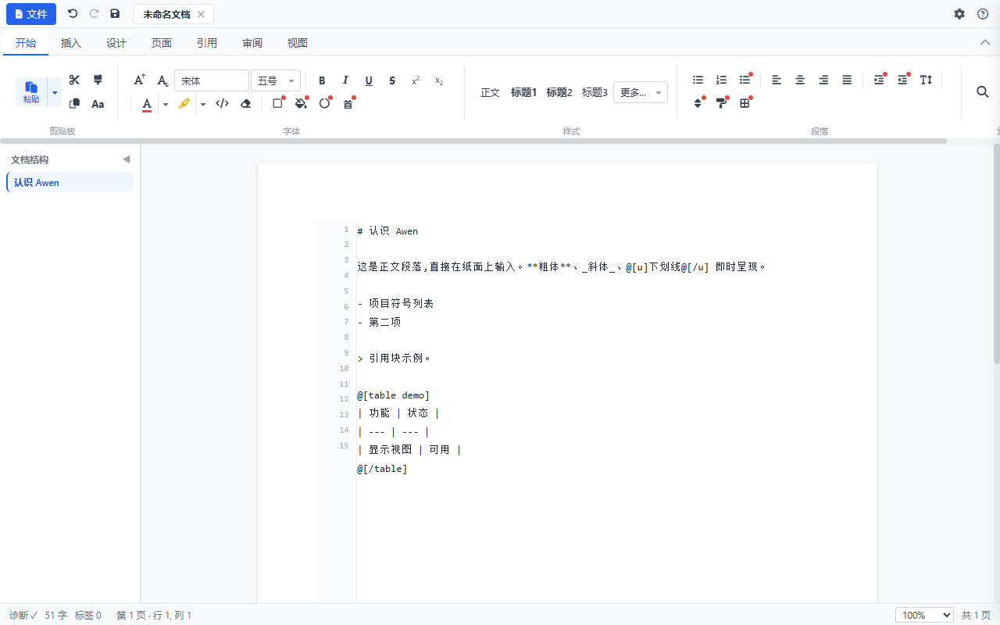
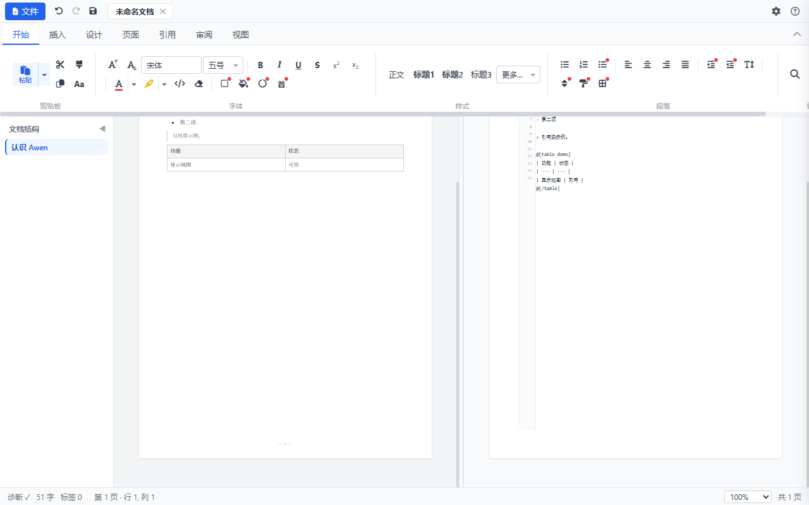

Awen 是一款为中文写作设计的桌面文档编辑器。它有两个面孔:在显示视图里,它是一张 A4 纸,你可以像使用 Word 一样直接排版写作;切换到语法视图,同一份文档变成一段简洁的纯文本源码——这份源码是整个文档的唯一权威,引擎负责把它排版成你看到的纸面。
这套"双视图、单真相"的设计带来三个好处:
| 如果你是…… | Awen 能给你什么 |
|---|---|
| 学生 / 论文写作者 | 标题层级、题注、交叉引用、目录一键生成,导出 Word 交作业 |
| 技术写作者 | 明文源码 + Git 版本管理 + 行内代码与代码块,写作即编程友好 |
| 公文 / 报告撰写者 | 中西文混排间距、行首禁则、标点挤压,排版规则由引擎自动处理 |
| AI 重度用户 | 明文源码可直接粘贴给大模型;AI 生成的 Awen 语法粘进语法视图即为排版文档 |
User Syntax(用户源码):你在语法视图里看到的那份文本。它是文档唯一的内容来源,你在纸面上做的一切编辑,最终都会同步回这份源码。
引擎(aine):Awen 的排版与解析核心。它读取源码,产出诊断(哪里写错了)、块结构(标题/段落/表格等)和排版结果。引擎跑在独立进程里,崩溃不会影响你的编辑。
.awen 文件包:你的文档在磁盘上的形态。它是一个单文件容器:最前面是明文源码(可直接 diff),后面跟着 Manifest 清单、图片等资源和(可选的)编译缓存。第 21 章详细讲解。
第一~八章是入门主线,按顺序读完即可独立写作;第九~十七章覆盖日常使用的全部功能;第十八~四十二章是进阶参考,按需查阅。如果你赶时间,读完第三章就能开工。

Windows 10 / 11(64 位)。安装包约 40MB,包含编辑器、aine 引擎运行时与默认资源,无需联网安装,安装后完全离线可用。
Awen 编辑器_1.0.0_x64-setup.exe。启动后你会看到:
| 区域 | 说明 |
|---|---|
| 标题栏 | 左侧是蓝色「文件」按钮(含全部文件操作的下拉菜单)、快速访问按钮(撤销/重做/保存)和多文档标签;右侧是设置(⚙)与帮助 |
| 选项卡栏 | 开始 / 插入 / 设计 / 页面 / 引用 / 审阅 / 视图 七个选项卡,按 Word 习惯组织 |
| 功能区 | 当前选项卡的全部按钮,分组成列,组名在底部 |
| 文档结构侧栏 | 按标题层级显示文档大纲,点击跳转,可收起 |
| 纸面 | A4 页面,直接输入即可写作 |
| 状态栏 | 诊断(语法是否正确)、字数、标签数、光标位置、缩放比例、页数 |
Awen 启动时总是给你一张干净的纸——内容来自你打开的文件,而不是内置示例。如果你之前编辑过且启用了自动保存,启动时会询问是否恢复未保存的草稿。
新版本发布为新的安装包,直接安装覆盖即可,文档与设置不受影响。卸载走系统"设置 → 应用",不会删除你的文档。
本章带你从零写出第一篇带标题、正文、列表和图片的文档。全程在显示视图完成,不需要接触任何语法。
也可以选中文字后按 Alt+1 直接应用一级标题,Alt+0 恢复正文。
恭喜,你已经完成了 Awen 的完整工作流:写作 → 排版 → 插图 → 保存。后面章节会逐个展开更强大的能力。
显示视图是默认的写作视图:一张 A4 纸,所有排版即时呈现。本章把纸面编辑的细节讲透。
回车分段——每一段在排版上是一个独立块,段间距由「页面 → 段落设置」控制。Awen 遵循中文排版习惯:源码里的物理换行不产生排版换行(详见语法章节),但在纸面上你只管按回车,所见即所得。
所有字符格式(粗斜下删、颜色、高亮、字号、字体)都作用于选区。格式刷是 Word 用户的老朋友:单击吸取光标处格式,再选中目标文字应用一次;双击进入连续刷模式,反复应用,按 Esc 或再点按钮退出。
「增大字号/减小字号」按钮沿着字号阶梯(9 → 10.5 → 11 → 12 → 14 → 16 → 18 → 20 → 22 → 26 → 36 → 48 → 72pt)步进,快捷键 Ctrl+Shift+. 与 Ctrl+Shift+,。中文字号(五号、小四、三号等)在字号下拉里对应到具体磅值。
选中英文,点「Aa」按钮循环切换:全小写 → 首字母大写 → 全大写。
左对齐、居中、右对齐、两端对齐四个按钮,快捷键 Ctrl+L / Ctrl+E / Ctrl+R / Ctrl+J。中文正文推荐两端对齐。
「编辑标记」开关显示段落符(¶);「专注模式」隐藏标题栏、选项卡、侧栏与状态栏,只留你和纸面,按 Esc 退出。
你在纸面连续输入时,Awen 的权威解析在后台异步进行,但打字会话期间(停止输入 0.8 秒内)纸面绝不会被重建,光标永远待在你输入的位置——这是编辑器的第一守则。停止输入约一秒后,排版结果(分页、图表编号)才会刷新。
本章逐一说明「开始 → 字体」组的每个控件,以及它们对应的源码形态(了解源码形态有助于在语法视图里识别与批量处理)。
| 格式 | 按钮/快捷键 | 源码形态 |
|---|---|---|
| 粗体 | Ctrl+B | **文字** |
| 斜体 | Ctrl+I | _文字_ |
| 删除线 | — | ~~文字~~ |
| 下划线 | Ctrl+U | @[u]文字@[/u] |
上标(x²)与下标(x₂)按钮对应 @[sup] / @[sub],适合脚注编号、化学式等场景。
两组分体按钮:主体一键应用当前色,箭头打开完整色板(含最近使用与其他颜色拾取器)。源码形态是 @[color #3366CC]…@[/color] 与 @[mark #FFF176]…@[/mark]。中文写法 @[颜色 …]、@[底纹 …] 同样合法。
字体下拉包含常用中文字体(宋体/黑体/楷体/仿宋/微软雅黑/等线/隶书/幼圆/华文中宋/华文细黑)与西文字体;字号下拉使用中文字号体系(五号、小五、小四、四号、三号、二号、一号)。源码形态 @[font "SimSun"]…@[/font],也支持单行作用域写法:@[font "KaiTi"] 这一行用楷体(不写闭合,生效到行尾)。

</> 按钮把选中文字包进行内代码(`代码`),使用等宽字体与浅灰底,适合命令、变量名。
橡皮擦按钮移除选区内的所有格式标记,只留纯文本。不会删除文字内容。
字符边框、字符底纹、带圈字符、首字下沉是规划中的功能,按钮带红点角标,点击会提示。
项目符号与编号按钮作用于选中段落或当前段落,再次点击取消。列表嵌套在语法视图里用缩进表达(两空格一级),纸面上建议通过语法视图调整层级。
「行距」按钮在五档间循环(1.15 → 1.5 → 1.9 默认 → 2 → 2.5);精确控制用「页面 → 段落设置」的行距下拉或自定义。行距写回 @[line-spacing 1.5]。
「段落设置」里的段间距下拉控制段后间距(@[para-spacing 0.5em]),选「自定义…」可输入任意值(如 0.75em)。「无段间距」会移除该设置行。
「首行缩进」开关写回 @[first-line 2em]——中文段首两字符缩进。开关状态会随文档保存与恢复。
样式组提供正文与标题 1~3 的一键样式,下拉里还有 4~6 级。样式决定字号、粗细与大纲层级——大纲侧栏和目录都从标题生成,所以请用样式而不是手动放大字号来做标题。
多级列表、增减缩进、段落排序、段落底纹、段落边框为规划功能(红点角标)。
「插入 → 图片」打开系统文件框,选择图片(≤1MB)后插入。图片默认原始尺寸、居中。
点击纸面上的图片,属性面板出现:宽度(5%~100%,百分比相对版心)与对齐(居中/左/右),点「应用」写回。对应的源码参数是 width 60% align center。
插入时图片以 data URI 写入源码;保存 .awen 时,引擎把图片抽取为包内资源(按内容哈希命名,如 media/img-5c12defa.gif),源码里的引用同步替换。同一张图在文档里出现多次只存一份。把 .awen 拷到任何电脑,图都在。
「插入 → 表格」弹出行列选择器(1~20 行 × 1~8 列),确定后插入带表头的表格。表格源码是 @[table 表名] … @[/table] 包裹的管道行,第一数据行为分隔行(| --- | --- |),其上的行是表头。
把光标放进任意单元格,功能区出现表格工具·布局:+行(在当前行上方插入)/−行/+列/−列。合并/拆分/对齐/排序在规划中。浮动迷你工具栏也会出现同样四个按钮。
表格未闭合(缺 @[/table])时,状态栏诊断会给出明确错误与行号;修复前文档仍可编辑,但排版可能不完整。
再打开或新建文档时,标题栏会出现新标签。操作方式:
| 操作 | 方式 |
|---|---|
| 切换 | 点标签 |
| 关闭 | 点标签上的 ✕,或中键点击标签;未保存会先确认 |
| 改名 | 双击标签,输入新名(只改显示名,保存路径不变) |
每个标签有独立的源码、撤销历史与图片资源,切换时互不串档。
标题栏蓝色「文件」按钮汇集全部文件操作:新建(Ctrl+N)、打开(Ctrl+O)、保存(Ctrl+S)、另存为、导入 docx、打印(Ctrl+P),导出为 Markdown/HTML/Word/TXT,最近文件列表(点按直开),以及放弃自动保存草稿。
打开对话框支持 .awen / .txt / .md / .markdown。.awen 容器自动解包(图片落到本机媒体目录);旧版纯文本 .awen 与纯源码文件同样直接打开。
最近打开的 10 个文件记录在本机;桌面版带完整路径,点击直接打开。
双击 .awen 文件会在已有窗口里新开标签(而不是再启动一个程序)。从命令行或资源管理器把文件拖到 Awen 图标上同样有效。
Ctrl+F 打开查找条。输入关键词后,所有命中以黄色高亮(CSS Custom Highlight API,不打断文档结构),查找条显示命中计数。Enter 跳到下一个,可循环。「区分大小写」「全字匹配」复选项控制匹配方式。
Ctrl+H(或查找条里的替换框)支持单个替换与全部替换。替换作用于源码层——也就是说你甚至可以替换源码标记,比如把所有 @[color #FF0000] 批量改成 @[color #C00000]。
语法视图里同样可用 Ctrl+F,在源码文本内查找定位——配合行号,批量调整非常高效。
「编辑 → 全选」选中当前文档全部内容。Ctrl+G 风格的行号定位:状态栏的诊断面板里,点击错误行可直接跳转。
Awen 的撤销(Ctrl+Z)不是逐字符回退,而是语义步:连续输入合并为一步,标点符号强制成步,粘贴/格式化/删除各自成步——撤销粒度接近人的思考单元。重做是 Ctrl+Y 或 Ctrl+Shift+Z。历史栈最多 300 步。
打字会话进行中(停止输入 0.8 秒内),排版引擎不会重建纸面——撤销与输入永远作用于你的光标位置,不会出现"字越打越少"或光标跳走。
编辑内容会定时快照到本机(localStorage)。意外退出后,下次启动自动恢复草稿,并弹出提示:可继续编辑或放弃草稿。文件菜单里也有「放弃自动保存草稿」。设置抽屉里可以关闭自动保存。
Ctrl+S 保存 .awen 采用原子提交:先写临时文件,成功后替换目标文件。保存过程中断电、崩溃,都不会产生写了一半的损坏文件。
显示视图与语法视图呈现的是同一份文档的两个面:前者是排版的纸面,后者是文本的源码。在任一侧编辑,另一侧都会同步。
语法视图同样是 A4 纸的几何:左侧是行号栏(当前行高亮),右侧是等宽字体的源码文本区,支持软换行。源码即所见——没有隐藏字符。
| 场景 | 为什么用语法视图 |
|---|---|
| 批量调整 | 查找替换直接作用于源码,配合行号精准定位 |
| 修正诊断 | 语法错误只有源码里能看清 |
| AI 协作 | 整段复制给大模型,产出的语法整段粘回 |
| 精细控制 | 文档级设置行、转义、嵌套结构在源码里一目了然 |
语法视图里的修改立即生效:停止输入约 0.3 秒后,源码被交给引擎重新解析,纸面随之更新。撤销栈同样覆盖语法视图的编辑。

状态栏「诊断」实时显示语法健康状态(✓ 或错误数)。点击展开明细:错误级别(红)会阻塞排版,警告级别(黄)不阻塞但建议修复。每条诊断带行号,点击跳转。

视图 → 分屏(或「窗口 → 拆分」)。纸面在左、源码在右,中间的分隔条可以拖拽调整两侧比例。「左右交换」一键对调两侧位置。
两侧滚动按「源码行号 ↔ 文档块」锚定联动:滚动语法侧,显示侧跳到对应块;滚动显示侧,语法侧滚到对应块的起始行。由于一页排版与源码行数的比例天然不同,靠近边缘时允许少量偏差。
文档级设置是写在源码开头的 @[…] 行,作用于整篇文档。「页面」选项卡的控件本质上是在帮你编辑这些行——所有设置随手可改,也可以直接在语法视图里写。
| 设置 | 源码行 | 说明 |
|---|---|---|
| 纸张 | @[page A4] | A4 / Letter / B5 / A3 / A5 |
| 页边距 | @[margin 20mm] | 毫米 |
| 字体 | @[font "SimSun"] | 文档默认正文字体 |
| 字号 | @[size 11pt] | 文档默认字号 |
| 行距 | @[line-spacing 1.9] | 倍数 |
| 首行缩进 | @[first-line 2em] | 中文段首习惯 |
| 主题 | @[theme default] | 主题 token(规划中) |
| 段间距 | @[para-spacing 0.5em] | 段后间距 |
| 目录 | @[toc depth: 2] | 目录收录层级 |
| 编号 | @[numbering figure "图 %figure"] | 图表公式自动编号格式 |
文件菜单的「导出为」提供四种格式。导出内容为源码的排版投影:文档设置行、批注不进入导出。
| 格式 | 保留内容 | 典型用途 |
|---|---|---|
| Markdown | 标题/段落/列表/引用/表格/图片引用/行内格式 | 发布到支持 MD 的平台、Git 仓库 |
| HTML | 纸面的完整视觉(含样式) | 网页发布、预览分享 |
| Word(.doc) | HTML 包裹的 Word 可读文档 | 交给使用 Office 的合作者 |
| TXT | 源码原样 | 归档、给只接受纯文本的通道 |
「文件 → 导入 docx」把 Word 文档转为 Awen 语法(标题/段落/粗斜体/列表/表格映射),转换在本地完成,不经网络。导入的文档按新文档打开,原文不受影响。
每个标签持有独立的源码、撤销历史、媒体目录与光标位置。切换标签不会把 A 文档的编辑串到 B 文档。
容器文档的图片解包到本机媒体目录(%LOCALAPPDATA%\AwenEditor\media),按内容哈希命名——不同文档引用同一张图时只存一份。渲染走 Tauri asset 协议,安全且快速。
容器里的资源若校验失败(哈希不符),打开会明确报错指出是哪个资源,而不是静默渲染出坏图。源码部分即使资源全部丢失也能正常打开。
视图 → 缩放提供 70%~200% 快捷档与自定义百分比(状态栏同款)。缩放作用于纸面渲染,不影响文档本身。
设置抽屉提供浅色与护眼主题(纸面与界背景转暖绿),深色主题在规划中。
双击选项卡名或右上角折角按钮折叠功能区;专注模式连侧栏状态栏一起隐藏。两者都为"全屏写作"服务,按 Esc 回到完整界面。
窗口宽度不足时,功能区自动收窄:按钮隐藏文字标签、选择框与样式库收紧;选项卡栏与功能区支持横向滚动,窄窗口下所有功能仍然可达。
标题栏 ⚙ 打开设置抽屉(右侧滑出)。
| 设置 | 状态 |
|---|---|
| 自动保存 | 可用。关闭后不再生成草稿快照(手动保存不受影响) |
| 显示编辑标记 | 可用。与「视图 → 编辑标记」按钮联动 |
| 主题(浅色/深色/护眼) | 浅色与护眼可用;深色规划中 |
| 界面缩放 / 界面语言 / 实时拼写检查 / 自动检查更新 | 规划中(红点) |
功能区的部分按钮带有红点角标:它们是规划中的功能,点击会提示而非静默无效。列出它们是为了让你看到完整的路线图:
| 选项卡 | 规划中的功能 |
|---|---|
| 开始 | 字符边框、字符底纹、带圈字符、首字下沉、多级列表、增减缩进、排序、段落底纹、段落边框 |
| 插入 | 页眉、页脚、页码、分页符、分节符、文本框、交叉引用、书签管理、日期时间、文档部件、符号扩容 |
| 设计 | 主题、样式集、水印、页面颜色、页面边框 |
| 页面 | 分栏、行号、断字、文档字体、文档字号 |
| 引用 | 更新目录、脚注管理、插入题注、交叉引用、表目录、引文与书目、索引 |
| 审阅 | 拼写检查、删除批注、批注导航、批注窗格、修订体系、比较与合并、限制编辑 |
| 视图 | 阅读视图、大纲视图、草稿视图、标尺、网格线、护眼按钮、单页/多页/页宽、并排查看 |
明确不做的:拼音指南(无注音数据源)、形状/艺术字/SmartArt/图表/3D、宏。
让我们从零开始,一步一步创建一篇简单的文档,学会编辑器最常用的功能。
分屏是学习 Awen 语法最好的工具:左边是排版效果,右边是实时同步的源码,"我做了这个操作,源码变成了这样"一目了然。
**。换个操作(改颜色、插标题),再观察源码变化。用这个方式工作几天,语法自然就会了,不需要死记硬背。
有些时候直接编辑源码更高效——比如把全文的某个词批量替换。切到语法视图,源码带行号展示,像编辑普通文本一样编辑;停止输入约 0.3 秒后左侧纸面自动更新。
@[table demo] 会被解析为表格,而 @[&table] 不会。不确定时看状态栏的「诊断」。表格源码用竖线分隔单元格,第二行的 | --- | --- | 是分隔行(区分表头与数据),不需要手动维护:
@[table my-table]
| 姓名 | 年龄 | 城市 |
| --- | --- | --- |
| 张三 | 25 | 北京 |
@[/table]media/… 引用——文档拷走不丢图。熟练之后,在语法视图里直接写标记比工具栏更快。常用速记:
| 想要的效果 | 输入的语法 |
|---|---|
| 一级标题 | # 标题文字 |
| 粗体 | **粗体文字** |
| 斜体 | _倾斜文字_ |
| 列表项 | - 列表内容 |
| 编号列表 | 1. 列表内容 |
| 引用块 | > 引用内容 |
| 分隔线 | --- |
| 行内代码 | `代码文字` |
Awen 为中文文档优化:中西文之间自动加入 ⅛ em 间距;引擎处理行首行尾禁则与标点挤压。语法支持中文方言:@[字体 宋体]、@[大小 12pt]、@[颜色 红]、@[图片 示例.png] 与英文写法完全等价,可混用。
Ctrl+H 打开替换,输入查找与替换内容,「全部替换」一次完成。配合语法视图,可以批量修改标记本身(例如把全文的 @[color #FF0000] 统一改成品牌色)。
长文档中引用图表或章节:在目标位置插入「书签」(@[label my-chart]),在引用处写 @[ref my-chart]。纸面上标签显示为 📌 标记、引用显示为 ↦ 指示;状态栏的「标签」可列出全部标签。
批注(@[comment 内容])是写给自己或合作者的注释,不参与排版。显示视图里批注收成一条黄色细线(悬停看内容);打印导出时忽略。
中文排版的专业性体现在断行细节上。这些规则由 aine 引擎自动执行,你不需要做任何设置,但了解它们有助于理解排版的"讲究"。
中文与西文/数字相邻时,引擎自动加入 ⅛ em 的间距,让"在 2026 年使用 Awen"读起来疏密得当——无需手动敲空格。
句号、逗号、右引号等收尾标点不会出现在行首;左引号、左括号等起始标点不会出现在行尾。换行点由引擎自动调整。
连续标点(如「……」」)在行内会做挤压处理,避免出现大片空白。
连续的英文字母与数字被视为不可分单元:换行永远不会把 "configuration" 拆成两半。
.awen 是一个单文件容器。它不是私有二进制格式——恰恰相反,它的设计核心是:真正的用户源只有一份明文,任何工具都能读。
example.awen
├─ User Syntax ← Awen 源码,UTF-8 明文,文件最前面
├─ Manifest ← JSON 清单:版本/文档 ID/资源清单(名称·大小·哈希)
├─ Resources ← 图片等资源,原样字节,按内容哈希命名
└─ (尾标) 8 字节魔数 + Manifest 偏移用文本编辑器打开 .awen,看到的第一部分就是源码;Git 可以逐行 diff,AI 可以直接读,不需要解包。Manifest 与资源区在其后,供程序快速定位。
源码是文档的唯一权威。把它以明文放在容器最前面,意味着:版本管理天然可用;误删了编辑器也能打开;备份/同步工具把它当普通文本;十年后哪怕 Awen 不在了,你的内容还在。
插入图片时源码里临时以 data URI 存在;保存 .awen 时自动抽取为包内资源(按内容哈希命名,同一张图只存一份),源码引用替换为 media/img-xxxx.png。文档拷到任何电脑都不丢图。
保存先写临时文件、成功后原子替换目标——中断不会损坏原文档。打开时逐个校验资源哈希,损坏会明确报错;就算资源全部丢失,源码部分照常打开。
Markdown/HTML/Word/TXT 是导出格式(有损投影);.awen 是存档格式(完整无损)。日常写作存 .awen,交付时导出。
em 是相对字号单位,1em 等于当前字号。段首缩进 2em 在五号字下与在小四下都恰好是两个字符宽——这就是 Awen 大量使用 em 的原因。
中文排版规则:句号、逗号等不能出现在行首,左括号、左引号等不能出现在行尾。引擎自动遵守。
连续标点占用的视觉宽度做挤压调整(如「……」),避免行内出现空洞。这一条由引擎处理,写作时无需关心。
文档内容只在两个地方:你保存的 .awen 文件,以及本机的自动保存草稿(浏览器存储)。Awen 没有任何服务器,不存在云端泄露。
撤销/重做/保存三个高频按钮常驻标题栏。撤销为语义步:连续输入合并为一步,历史栈 300 步。Ctrl+Z/Ctrl+Y 等价。
剪贴板组:粘贴(分体按钮,下箭头=只保留文本)、剪切、复制、格式刷(单击单次/双击连续)、更改大小写。
字体组:增减字号、字体与字号下拉、B/I/U/S、上下标、字体颜色与底纹(分体)、行内代码、清除格式,以及规划中的字符边框/底纹/带圈/首字下沉。
样式组:正文与标题 1~3 一键样式,「更多…」含 4~6 级。样式同时决定大纲与目录层级。
段落组:项目符号/编号/多级列表(规划)、四种对齐、增减缩进(规划)、行距循环、排序/底纹/边框(规划)。
编辑组:查找、替换、全选。
插入组(表格/图片/链接/分隔线/脚注/目录)、公式与符号组(数学/书签/日期/符号面板)、引用与批注组(引用块/批注),以及规划中的页眉页脚、分页分节符、文本框、交叉引用等。
设计:主题、样式集、水印、页面颜色、页面边框(均规划中,待规范冻结)。页面:纸张/方向/边距(可用)、行距/首行缩进/段间距(可用)、分栏/行号/断字(规划)、文档字体/字号(规划)。
引用:目录/脚注可用,更新目录/脚注管理/题注等规划中。审阅:字数统计与新建批注可用,拼写检查/批注导航/修订体系/比较合并/限制编辑为规划或待规范冻结。
视图:显示/语法/分屏、专注模式、导航窗格、编辑标记、缩放、拆分与左右交换可用;阅读/大纲/草稿、标尺/网格线/护眼按钮、单页多页页宽、并排查看规划中。文件操作集中在标题栏「文件」菜单。
弹窗选行列(≤20×8),插入后光标自动进入首格;布局工具与浮动工具栏都可插删行列。
系统文件框选图(≤1MB),插入后点击图片调出属性面板调宽度与对齐;保存时进包。
插入占位后直接输入改文字:源码 @[link 链接文字 url: https://example.com],纸面渲染为超链接。
插入 @[footnote 1 内容],纸面显示为带上标编号的注释,悬停可看全文。
@[toc depth: 2] 按标题自动生成目录,点击条目跳转对应标题。
数学块 @[m]…@[/m](独立成块)或行内 @[m]E=mc²@[/m];书签 @[label 名] 供引用。
符号面板提供 ©®™±×÷≈≠≤≥℃①~⑩→←↑↓§¶•…°¥€£ 等常用符号,点击插入光标处。
引用块(>)用于引用他人文字;批注(@[comment])不参与排版,仅存于源码——纸面上是一条黄色细线,悬停看内容。
支持 A4(210×297mm)、Letter(215.9×279.4mm)、B5(176×250mm)、A3(297×420mm)、A5(148×210mm)。设置写回 @[page A4]。
「纵向/横向」按钮在当前会话内交换宽高(会话级覆盖)。横排正式语法在规划中。
预设正常 20mm / 窄 12.7mm / 宽 25.4mm / 宽 30mm,或自定义 5~60mm。写回 @[margin 25.4mm]。
行距为倍数(1.15~2.5,默认 1.9);段间距为段后间距(em)。两者都会改变页面的容纳量,页数实时更新。
开关式:@[first-line 2em] 存在即生效。按钮高亮表示开启。
所有页面设置都是源码行。想批量应用公司模板,把模板的设置行保存成片段,粘到任何文档开头即可。
标题→#、粗斜体→**/_、列表/引用/表格原样、图片→引用。文档设置行、批注、行内标签被剥离。适合技术文档发布。
按纸面视觉导出完整 HTML(含内联样式),双击浏览器即可查看。适合分享预览。
HTML 包裹的 Word 可读文档,Office/WPS 可直接打开继续编辑。复杂排版(如精确分页)以 Word 打开后微调为宜。
源码原样导出,适合归档或迁移。
导出是投影不是存档:docset、批注、标签引用等 Awen 特性会丢失。要无损分享,直接把 .awen 发给对方(Awen 免费安装)。
Ctrl+P 打开系统打印。打印视图自动隐藏全部界面元素,只输出纸面内容;「另存为 PDF」是最常用的归档方式。打印使用当前缩放 100% 的排版结果,与屏幕所见一致。
Ctrl+H → 输入旧词新词 → 全部替换。替换作用于源码,术语的格式标记不受影响。
语法视图里选中整章源码剪切,粘贴到新位置;或显示视图里以标题块为单位剪切粘贴。
页面 → 行距下拉选择目标值,一处修改作用于整篇(文档级设置行)。
语法视图在正文前输入居中的大标题与作者信息,随后 --- 分隔(后续分页符规划中)。
Ctrl+Z 逐步回退;关掉过文档则看自动保存草稿(文件菜单 → 放弃自动保存草稿旁的恢复提示)。
高频操作全部有快捷键(见速查卡)。前三周强迫自己用快捷键,之后效率翻倍。
写之前先定标题层级,目录与大纲自动成立;不要手动放大字号假装标题。
分屏状态下做一次工具栏操作,看一眼右侧源码——一周内即可掌握全部常用语法。
把常用文档(周报/论文)的设置行与骨架保存为 .awen 模板,新建后「另存为」即可开工。
初稿阶段开专注模式,只管写;排版修饰留到修改阶段。
第一层·轻量标记:# 标题、**粗体**、_斜体_、~~删除~~、`代码`、- 列表、1. 列表、> 引用、--- 分隔线——覆盖 90% 日常写作。
第二层·显式命令:@[ 开头的命令,携带参数实现精细控制:
@[color #FF0000]红色文字@[/color]
@[size 14]大号文字@[/size]
@[font "楷体"]楷体文字@[/font]
@[link 链接文字 url: https://example.com]
@[footnote 1 脚注内容]
@[image 照片.png width: 65% align: center]第三层·文档设置:文档开头的全局行(page/margin/font/size/line-spacing/first-line/theme/toc/numbering)。
同一篇文档允许中英方言混用(规范 §6.14):@[字体 宋体] ≡ @[font "SimSun"]、@[大小 12pt] ≡ @[size 12pt]、@[图片 x.png] ≡ @[image x.png]。团队里统一一种即可。
闭合式:@[u]文字@[/u],作用范围由闭合标记界定。单行式:@[font "SimSun"] 文字,作用到本行结尾——适合"这一行特殊处理"。混用规则:闭合式优先解析,行内式作用于剩余部分。
代码块、数学块、表格、多行批注使用"开行 + 内容 + 闭行"结构,内容跨行保留原文(不解析内部标记)——这也是往文档里贴示例代码的方法。
想让 ** 显示为两个星号而不是粗体?前面加 @:@@[、@**。全部转义规则见规范 §11。
标题层级只用于结构,不用于视觉强调。大纲、目录、导航全部依赖它。
所有 @[page/margin/…] 行放文件最前,引擎与协作者都能一眼看到。
用 @[comment] 记录"这里待补充",交付前全文搜索「@[comment」清零。
@[table sales-q2] 给表起名,配合将来的题注与交叉引用;名字用英文与连字符。
大部分 Markdown 语法与 Awen 轻量层兼容:# 标题、**粗体**、- 列表、> 引用、`代码`、--- 直接粘进语法视图即可。
| Markdown | Awen | 说明 |
|---|---|---|
| *斜体* | _斜体_(单星号亦可) | 兼容 |
| [文字](网址) | @[link 文字 url: 网址] | 显式命令 |
|  | @[image 图] | 图片进包 |
| ---(分隔线) | --- | 兼容 |
| 表格管道 | @[table 名] 包裹 | 多了一对定界行 |
导出的 .md 保留标题/列表/表格/引用/图片引用,回到任何 MD 工具链零障碍。
状态栏「诊断」是文档的健康检查。三类信息:
| 级别 | 含义 | 典型例子 |
|---|---|---|
| 错误(红) | 语法无法解析,该块不参与排版 | 表格未闭合、命令缺右括号、Raw 块未闭合 |
| 警告(黄) | 能解析但可能不合预期 | 未注册的命令名 |
点击诊断条展开明细,每条带 1 基行号,点击行号语法视图跳转对应行。修复建议:先看行号,再对照第 38 章速查卡核对写法。
无需手动加空格;专有名词保持原样,引擎处理间距。代码用行内代码标记,避免字体混排问题。
侧栏大纲点击跳转;写作时保持标题层级规范,大纲即目录。
.awen 明文源码可进 Git;合并冲突在源码层解决(文本 diff),图片资源按内容哈希命名天然免冲突。
两个版本的 .awen 用文本 diff 工具对比,源码差异一目了然——这正是容器把源码放最前且不压缩的原因。
| 现象 | 排查 |
|---|---|
| 打开文档是乱码 | 文件可能不是 UTF-8;用文本编辑器转存为 UTF-8 再打开 |
| 图片显示为占位框 | 图片是外部路径且文件不存在;重新插入或改为包内引用 |
| 诊断报"未闭合" | @[table]/@[code]/@[m] 等缺闭合行,按诊断行号补 @[/…] |
| 撤销不见效 | 撤销针对语义步;连续输入合并为一步属正常,再按一次继续回退 |
| 保存后其他电脑打不开图片 | 请确认以 .awen 容器保存(保存后源码里图片应为 media/ 引用而非本地路径) |
| 窗口变小后功能区不全 | 功能区自动收窄;仍可横向滚动查看全部按钮 |
aine 引擎负责解析/排版/诊断(规则权威);桌面壳负责界面与文件 IO。规则变了改引擎,体验变了改壳,互不污染。
纸面是源码的投影。一切编辑最终都写回源码——所以才有"明文可 diff、AI 可读、永不锁定"的自由。
全部功能离线可用:引擎本地进程、图标字体本地分发、无任何遥测。你的文字只属于你。
| 元素 | 语法 |
|---|---|
| 一级~六级标题 | # 文字 … ###### 文字 |
| 段落 | 直接文字(空行分段) |
| 无序/有序列表 | - 文字 / 1. 文字 |
| 引用 | > 文字 |
| 分隔线 | --- |
| 代码块 | @[c python]…@[/c] |
| 数学块 | @[m]…@[/m] |
| 表格 | @[table 名]…@[/table] |
| 批注 | @[comment 内容] / 多行 @[comment]…@[/comment] |
| 目录 | @[toc depth: 2] |
| 图片 | @[image 图.png width 60% align center] |
| 元素 | 语法 |
|---|---|
| 粗体/斜体/删除线 | **文** / _文_ / ~~文~~ |
| 行内代码 | `文` |
| 下划线 | @[u]文@[/u] |
| 上下标 | @[sup]2@[/sup] / @[sub]2@[/sub] |
| 行内数学 | @[m]E=mc^2@[/m] |
| 颜色/底纹/字号/字体 | @[color #36C]…@[/color] 等(中文别名:颜色/底纹/大小/字体) |
| 字体单行作用域 | @[font "KaiTi"] 本行楷体 |
| 链接 | @[link 文字 url: https://…] |
| 脚注 | @[footnote 1 内容] |
| 标签/引用 | @[label 名] / @[ref 名] |
| 转义 | 前缀 @:@@[…]、@** |
| 设置 | 语法 |
|---|---|
| 纸张 | @[page A4] |
| 页边距 | @[margin 20mm] |
| 字体/字号 | @[font "SimSun"] / @[size 11pt] |
| 行距/段间距 | @[line-spacing 1.9] / @[para-spacing 0.5em] |
| 首行缩进 | @[first-line 2em] |
| 主题 | @[theme default] |
| 目录 | @[toc depth: 2] |
| 编号 | @[numbering figure "图 %figure"] |
| 术语 | 解释 |
|---|---|
| User Syntax(用户源码) | 文档的唯一权威文本,语法视图所见 |
| 引擎(aine) | 解析与排版核心,独立于界面运行 |
| 诊断 | 引擎对语法问题的报告(错误/警告) |
| 块(block) | 文档的基本结构单元:标题/段落/表格/图片各是一个块 |
| docset | 文档级设置行(@[page] 等),纸面上显示为灰色细条 |
| 语义步 | 撤销的最小单位:连续输入合并、标点成步 |
| 容器(v0.5) | .awen 的单文件包结构:源码+清单+资源 |
| 资源化 | 保存时把 data URI 图片抽取为包内文件 |
| codec | chunk 的编码方式;源码恒为 none(不压缩) |
| Canonical | (预留)由源码重建的编译缓存,可丢弃 |
不必须。显示视图覆盖日常写作;语法是进阶工具,用到再查速查卡。
拷贝 .awen 文件 + 新电脑安装 Awen。图片在包里,无需其他文件。
数学块提供样式化展示;专业公式排版在路线图中。
图片单张 ≤1MB(阶段限制);文档本身无硬限制。
能,全部替换是一步撤销。
@[font "SimSun"] @[size 11pt] @[first-line 2em]。@[label q2-table]。至此你走完了 Awen 的完整工作流,这些技能覆盖日常文档 90% 以上的需求。
显示视图的每一次编辑都回写为源码;引擎解析源码产出权威结构;纸面按权威结构重建。循环往复,源码永远是对的。
理解"源码即权威"后,很多设计变得自然:语法视图不是附属功能而是本体;明文容器不是妥协而是卖点;诊断不是找茬而是引擎在帮你守规矩。
Awen,把排版交给引擎,把写作还给你。
— 手册完 —
Awen,把排版交给引擎,把写作还给你。